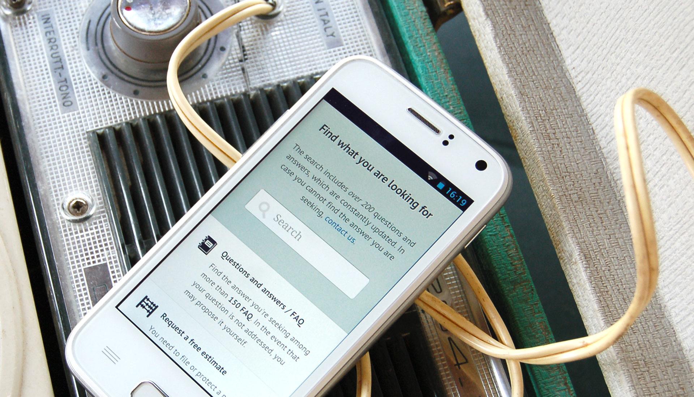
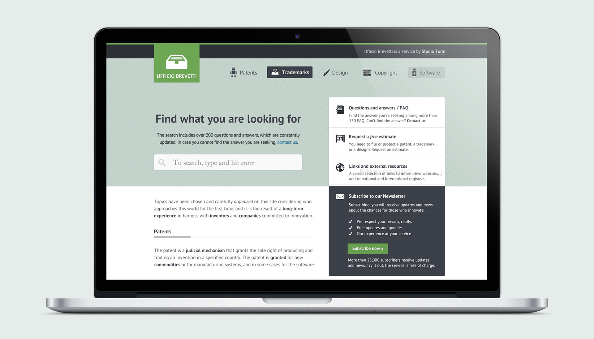
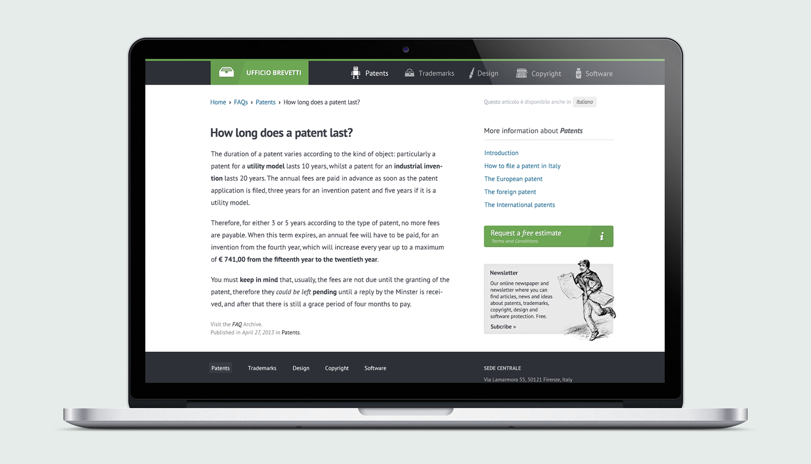
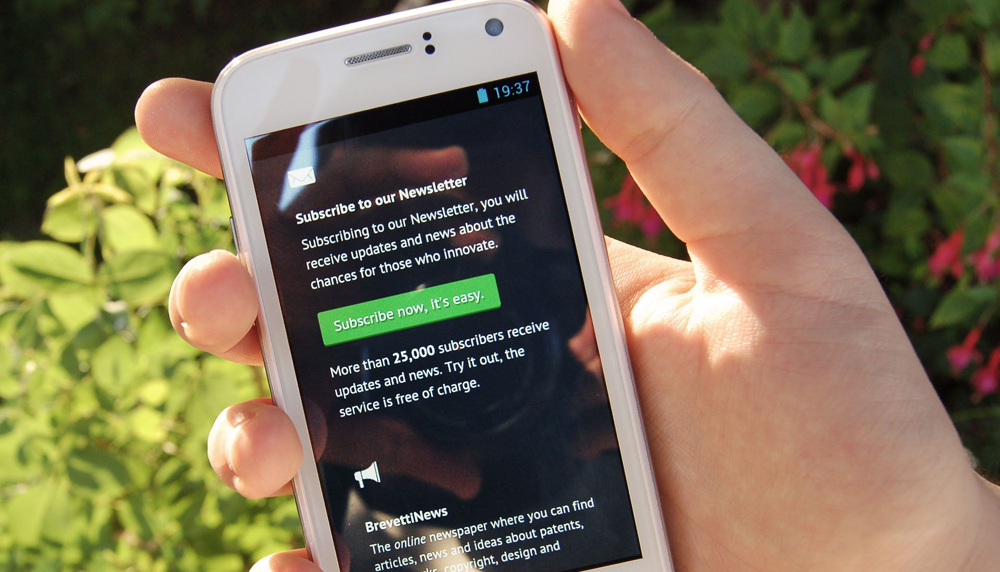

Turini Group
Simple design focused on usability for easier searches and straightforward content reference.
Ufficio Brevetti is a useful resource for those that want to gain an insight into how patents, trademarks and copyright work.
I worked with Studio Turini to transfer the old website from static HTML to a multilanguage WordPress environment providing a new design that strongly focuses on the Search feature and the Archive.
Usability was a fundamental requirement, especially for the mobile version. Every feature and section has been taken in careful consideration to produce a clean and enjoyable design.
